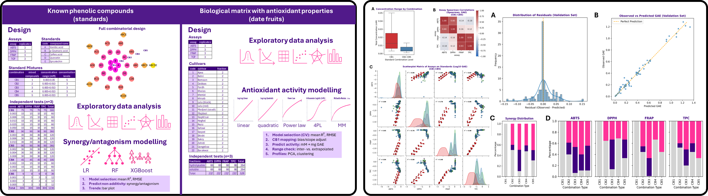

Machine Learning and NLP
This section showcases selected machine learning and natural language processing projects spanning multi-omics, metabolomics, bibliometrics, anomaly detection, recommendation systems, and scientific career analytics. Each project combines reproducible Python workflows with interpretable visual outputs and, where relevant, publication-oriented reporting.
FNRL Mode-of-Action in Arabidopsis Roots: an Integrated Multi-Omics, Machine Learning and Bioinformatics Study
Objective: Investigate the function of the root-specific FNRL gene in Arabidopsis thaliana by integrating phenotyping with transcriptomics, proteomics, metabolomics, machine learning, and bioinformatics. The study compared wild type plants, two independent loss-of-function mutants, and a GFP-complemented line to uncover molecular pathways associated with FNRL regulation.
Dataset: Multi-omics and phenotypic dataset comprising root RNA-seq, LC-MS/MS proteomics, GC-MS metabolomics, nitrate content measurements, and root length data across four genotypes and biological replicates.
Methods: Data cleaning and harmonisation, missing-value imputation, log transformation, cross-omics scaling, PCA, differential expression analysis, biomarker discovery based on mutant consistency and GFP rescue rules, hierarchical clustering, k-means clustering, LDA, Elastic Net and Random Forest modelling, plus bioinformatics mining using TAIR, UniProtKB, GO/AmiGO, KEGG, STRING, Cytoscape, PaintOmics and AraCyc.
- Identified 504 high-confidence FNRL-regulated biomarkers across transcriptomics, proteomics, and metabolomics.
- Resolved biomarker behaviour into 4 main expression profiles, separating FNRL-activated and FNRL-repressed targets with strong or partial genetic rescue.
- Built a conceptual model of FNRL regulation based on two main axes: regulatory direction and rescue strength.
- Showed that root growth phenotypes were highly predictable from biomarker-derived molecular profiles, with Elastic Net models achieving strong performance.
- Integrated pathway and interaction analyses highlighted processes linked to nitrogen metabolism, protein processing, ubiquitin-mediated proteolysis, and root-associated regulation.
- Generated an interpretable multi-omics resource to support biological interpretation of FNRL mode of action and downstream manuscript preparation.
Technical highlights: Python • multi-omics integration • biomarker discovery • clustering • LDA • Elastic Net • Random Forest • pathway analysis • network biology
Status: Article in preparation
Final report
Python code and Jupyter notebook

Machine Learning Reveals Synergistic Effects of Lactobacillus helveticus in Camel Milk Fermentation Using Metabolomics
Objective: Develop a computational biomarker discovery pipeline to isolate metabolites specifically associated with Lactobacillus helveticus fermentation in camel milk, and determine whether co-culture with L. bulgaricus or S. thermophilus induces synergistic or antagonistic metabolic effects.
Dataset: Untargeted UPLC-MS/MS metabolomics dataset covering 13,400 metabolites, including 3,632 identified compounds, generated from camel and bovine milk fermented under mono- and co-culture conditions.
Methods: Three-way ANOVA, PCA, LDA, HDBSCAN, k-means, spectral clustering, self-organising maps (SOM), Random Forest classification, feature importance ranking, metabolite annotation, superclass analysis, and pathway exploration using MetaboAnalyst and external metabolic databases.
- Designed a 4-level biomarker selection pipeline reducing 13,400 compounds to the most biologically relevant features.
- Selected 2,069 metabolites through full-factor interaction testing, then refined to 1,017 metabolites showing clear synergy/antagonism patterns.
- Applied Random Forest modelling to isolate 508 high-impact biomarkers associated with metabolic interactions driven by L. helveticus.
- Retrieved 133 identified metabolites, of which 87 displayed synergistic profiles and 46 antagonistic profiles.
- Highlighted metabolite classes linked to amino acid metabolism, bioactive lipids, carbohydrates, and fermentation-associated functional compounds.
- Developed a reusable in silico protein digestion tool to simulate enzyme cleavage of camel and bovine caseins, supporting interpretation of dairy proteolysis and related cheese studies.
- Delivered a robust analytical framework supporting downstream biological interpretation and manuscript preparation.
Technical highlights: Python • metabolomics • feature selection • clustering • Random Forest • biomarker discovery • pathway analysis • Side tool: in silico protein digestion
Status: Article in preparation
Final report
Python code and Jupyter notebook
Related bioinformatics tool
Associated publication

Machine Learning Modelling of Synergy and Antagonism of Phenolic Compounds Using Antioxidant Assays
Objective: Develop a machine learning framework to quantify synergistic and antagonistic interactions between phenolic compounds across multiple antioxidant assays, using observed-versus-predicted absorbance behaviour to reveal non-additive biochemical effects.
Dataset: Experimental antioxidant dataset comprising individual standards and binary mixtures (CB1–CB5) tested across multiple assay systems, with absorbance measurements collected for pure compounds and combinations under controlled concentrations.
Methods: Exploratory data analysis, assay-wise regression modelling, XGBoost prediction, residual-based synergy scoring, threshold optimisation, confusion matrix evaluation, feature importance ranking, and comparative interpretation across antioxidant assay types.
- Built XGBoost regression models to predict expected absorbance values from single-compound behaviour.
- Calculated synergy and antagonism scores from prediction residuals, enabling quantitative classification of interaction strength.
- Demonstrated that interaction behaviour varies substantially across assay systems, revealing assay-dependent biochemical responses.
- Generated interpretable classification outputs distinguishing synergistic, additive, and antagonistic mixtures.
- Established a transferable computational framework for analysing compound interactions in antioxidant chemistry.
- Produced publication-ready visual outputs supporting article submission.
Technical highlights: Python • XGBoost • regression modelling • residual scoring • assay comparison • feature interpretation
Status: Article under review
Final report
Python code and Jupyter notebook

Bread Protein Biomarker Discovery Assisted by Machine Learning
Objective: Identify peptide biomarkers associated with wheat genotype groups and flour-quality protein expression, using statistical learning and machine learning to support biomarker-assisted selection in bread wheat.
Dataset: Large-scale proteomics dataset comprising thousands of peptides derived from flour proteins quantified across a broad panel of wheat genotypes, integrated with genotype metadata and protein annotation.
Methods: Data normalisation, correlation analysis, t-tests, ANOVA, hierarchical clustering, k-means clustering, self-organising maps (SOM), PCA, LDA, Random Forest, SVM, MLP neural network, and stacked ensemble modelling for genotype classification and biomarker ranking.
- Integrated statistical and machine learning outputs into a unified biomarker discovery framework.
- Resolved genotype structure through multiple complementary clustering approaches, including HCA, k-means, and SOM.
- Applied supervised models to classify genotype groups using peptide abundance profiles.
- Built a stacked ensemble model combining Random Forest, SVM, and MLP to improve classification robustness.
- Identified peptide biomarkers linked to key flour-quality protein groups, including glutenins and gliadins.
- Generated biologically interpretable candidate markers relevant for wheat breeding and flour functionality.
Technical highlights: Python • proteomics • biomarker discovery • clustering • stacked machine learning • classification • feature ranking
Status: Article in preparation
Final report
Python code and Jupyter notebook

Career Trajectory Mapping From My Scientific Publications Using NLP, Machine Learning and Analytics
Objective: Develop a reproducible NLP and machine learning framework to analyse the thematic evolution of a scientific career through publication metadata, abstracts, keywords, and semantic content, with the goal of identifying major research phases, transitions, and future directions.
Dataset: Curated corpus of personal scientific publications spanning multiple years, integrating titles, abstracts, keywords, journal metadata, authorship patterns, and publication timelines.
Methods: Text preprocessing, tokenisation, TF-IDF, topic modelling, keyword frequency analysis, semantic clustering, temporal trend analysis, PCA, LDA, and machine learning-assisted interpretation of research trajectory patterns.
- Built a structured NLP corpus from publication records across multiple scientific domains.
- Identified major thematic transitions across career stages using topic modelling and semantic clustering.
- Mapped the evolution from molecular plant science to multi-omics, machine learning, and computational biology.
- Integrated publication chronology with thematic outputs to reconstruct career progression pathways.
- Generated visual analytics highlighting dominant research themes, emerging directions, and interdisciplinary expansion.
- Produced a data-driven framework transferable to researcher profiling, strategic planning, and academic portfolio analysis.
Technical highlights: Python • NLP • topic modelling • TF-IDF • semantic analysis • temporal analytics • machine learning interpretation
Status: Completed analytical report
Final report
Python code and Jupyter notebook

Aliens, Algorithms & Anomalies: Visualising the NUFORC UFO Sightings
Objective: Develop a machine learning and NLP framework to analyse large-scale UFO sighting reports, identify reporting patterns, classify anomalous events, and prioritise cases with high investigative value.
Dataset: NUFORC database containing more than 150,000 UFO sighting reports, integrating temporal records, geographical metadata, witness descriptions, event characteristics, and free-text narratives.
Methods: Data cleaning, geospatial enrichment, NLP feature extraction from witness reports, exploratory data analysis, temporal and spatial visualisation, classification modelling, anomaly prioritisation, and predictive scoring.
- Cleaned and enriched large-scale historical sighting data with geographical coordinates and regional metadata.
- Extracted structured variables from free-text witness narratives to support NLP-driven analysis.
- Built predictive models to identify high-priority sightings associated with stronger anomaly indicators.
- Developed case prioritisation logic to flag reports with elevated close-encounter characteristics.
- Generated multi-scale visual analytics showing temporal waves, spatial hotspots, and reporting behaviour.
- Combined scientific rigour with unconventional public data to demonstrate transferable anomaly-analysis methodology.
Technical highlights: Python • NLP • geospatial analytics • classification • feature engineering • anomaly scoring • Tableau
Status: Completed analytical report
Final report
Python code and Jupyter notebook
Interactive Tableau dashboard

Decoding Love with Data: Matchmaking in a Dating App
Objective: Develop a machine learning and NLP framework to identify compatible matches between dating profiles by combining structured demographic features, personal preferences, and free-text self-descriptions.
Dataset: Large-scale dating profile dataset including demographic variables, lifestyle attributes, preferences, and millions of words extracted from personal essays written by users.
Methods: Text preprocessing, tokenisation, lemmatisation, topic modelling (LDA), feature encoding, clustering, cosine similarity, nearest-neighbour matching, and interactive match retrieval.
- Processed millions of words from user essays to extract meaningful lifestyle and personality themes.
- Applied topic modelling to identify dominant discussion themes across personal profiles.
- Integrated structured profile variables with NLP-derived features into a unified similarity framework.
- Built cluster-based matching logic to improve candidate relevance before similarity scoring.
- Computed profile-to-profile similarity using cosine similarity within behavioural clusters.
- Developed an interactive interface to retrieve top compatible matches for any selected profile.
Technical highlights: Python • NLP • topic modelling • clustering • cosine similarity • recommendation logic • Gradio interface • Tableau
Status: Completed machine learning project
Final report
Python code and Jupyter notebook
Interactive Tableau dashboard

Mapping the Landscape of Scientific Publications
Objective: Explore large-scale scientific publication metadata to identify bibliometric trends, publication patterns, dominant research topics, and long-term shifts in disciplinary focus.
Dataset: Scientific article metadata dataset containing approximately 120,000 publications with information on titles, authors, publication dates, journals, publishers, languages, article types, references, and subject descriptors.
Methods: Metadata cleaning and wrangling, exploratory data analysis, bibliometric visualisation, subject text preprocessing, TF-IDF vectorisation, and k-means clustering to group fine-grained subject labels into broader thematic categories.
- Cleaned and structured a large bibliographic dataset to support interpretable publication analytics.
- Analysed long-term trends in publication volume, article types, journals, publishers, languages, citations, and title length.
- Identified prolific authors and high-output journals across multiple scientific fields.
- Explored subject evolution over time to distinguish long-lasting, emerging, and short-lived research areas.
- Reduced 1,265 subject labels into 7 broader thematic clusters using text mining and k-means clustering.
- Produced publication-ready visual analytics and an interactive Tableau dashboard for bibliometric exploration.
Technical highlights: Python • bibliometrics • metadata analytics • text mining • TF-IDF • k-means clustering • Tableau
Status: Completed analytical report
Final report
Python code and Jupyter notebook
Interactive Tableau dashboard
Raw dataset

Website design
This section showcases website projects that I have designed, built, maintained, or substantially improved. My work ranges from hand-coded static websites and chatbot integration to WordPress/Elementor administration, content architecture, production deployment, technical troubleshooting, and ongoing client support.
Professional Website and Integrated Portfolio Chatbot
Objective: Build and maintain a distinctive professional website that presents my scientific career, data science capabilities, portfolio, publications, training, and consulting services in a clear, interactive, and visually recognisable format.
Website: dlf2024.github.io
Methods: Designed and coded the website from the ground up using HTML5, CSS3, and vanilla JavaScript; implemented responsive tabbed sections, reusable content components, custom graphics, structured metadata, accessible navigation, and GitHub Pages deployment. I also developed and connected a Python chatbot hosted separately on Render.
- Created a complete one-page professional website with dedicated sections for Biography, Skills, Portfolio, Learning, Certificates, Resume, and Publications.
- Developed a cohesive visual identity using a custom colour palette, branded illustrations, responsive cards, tabbed content panels, and mobile-specific layout adjustments.
- Implemented interactive JavaScript navigation for nested portfolio, biography, skills, and learning content without requiring a web framework.
- Added search-engine and social-sharing metadata, including descriptive page titles, Open Graph tags, Twitter metadata, and structured content to improve discoverability and presentation.
- Integrated downloadable, date-versioned resume and publication resources and established a repeatable maintenance workflow for updating website assets and links.
- Built a lightweight Python chatbot that indexes a curated snapshot of the website, applies TF-IDF-based semantic retrieval, and returns concise answers with direct links to relevant website sections and documents.
- Separated the chatbot into its own GitHub repository and Render backend, with a documented synchronisation and redeployment checklist whenever the website snapshot, resume, or publications file changes.
- Continuously test the website across desktop and mobile layouts, refine readability and navigation, and update content as new projects, publications, qualifications, and consulting activities are completed.
Technical highlights: HTML5 • CSS3 • JavaScript • responsive design • GitHub Pages • Git/GitHub • SEO metadata • Python • FastAPI backend • rule-based intent recognition • fuzzy FAQ matching • TF-IDF retrieval • Render deployment
Status: Live and under continuous development
Visit website
GitHub profile

Ori Scientific Website Administration and Content Development
Objective: Improve and maintain the public website of Ori Scientific, an Australian food research and development company, while supporting clearer service communication, easier navigation, and a consistent professional presentation.
Website: oriscientific.au
Methods: Conducted a content and usability audit, then implemented updates through WordPress and Elementor. Work includes page editing, template reuse, menu administration, service architecture, post creation, brand-consistent visual updates, and preparation of repeatable maintenance procedures.
- Reviewed the existing website and provided prioritised recommendations covering wording, consistency, navigation, content gaps, visual presentation, and future social-media integration.
- Revised key homepage, About, Contact, and service content to communicate Ori Scientific's analytical testing, product development, pilot-scale processing, research, and regulatory capabilities more clearly.
- Created new service content for Pilot Plant Laboratory and Research Permits, Import Approvals and Accreditations.
- Built new Elementor pages by reusing and adapting the established Research and Development template, preserving the site's structure and visual identity.
- Added the new services to the main Our Services dropdown menu and to the quick-access navigation on the services page.
- Created and published a new News & Updates post, including category assignment, excerpt, featured image, permalink review, and front-end validation.
- Applied consistent brand colours, iconography, headings, calls to action, and page hierarchy across newly developed content.
- Documented repeatable procedures for creating service pages, updating dropdown menus, and publishing future news posts so that ongoing maintenance remains efficient and reliable.
- Provide continuing webmaster support for content updates, quality assurance, website maintenance, and future LinkedIn/Facebook communication.
Technical highlights: WordPress • Elementor • page templates • responsive content editing • information architecture • menu administration • blog publishing • brand consistency • webmaster documentation
Status: Active client project and ongoing maintenance
Visit website

Data Biome Website Design, Deployment and Secure Contact Infrastructure
Objective: Design and deploy a production-ready website for Data Biome, a biotechnology startup developing probiotics for ruminants to reduce methane emissions and mitigate greenhouse-gas impact.
Website: databiome.au
Methods: Built the full website locally using HTML5, CSS3, vanilla JavaScript, PHP, and custom media assets, then deployed it to WebCentral hosting through cPanel. The project also included secure contact-form delivery, domain email authentication, responsive testing, and production troubleshooting.
- Created the complete project structure, brand palette, one-page information architecture, reusable responsive cards, and sticky accessible navigation.
- Integrated custom visual assets and a full-width animated hero background, processed and compressed with FFmpeg for web delivery.
- Implemented semantic HTML, keyboard-accessible navigation, visible focus states, form validation, bot protection, and reduced-motion considerations.
- Developed the contact workflow using
contact.php, PHPMailer, authenticated SMTP, and end-to-end browser-to-inbox testing.
- Diagnosed and resolved production-only email failures by configuring the hosting provider's SMTP relay and repairing SPF and DMARC records.
- Adapted the CSS to WebCentral's legacy linter by replacing unsupported modern features while retaining responsive behaviour.
- Established a password-protected staging area, versioned ZIP deployments, cache-busting conventions, and post-launch quality checks.
- Completed production launch, client handover, and an ongoing maintenance plan covering content, links, form health, and future feature development.
Technical highlights: HTML5 • CSS3 • JavaScript • PHP • PHPMailer • SMTP • SPF/DMARC • FFmpeg • WebCentral cPanel • responsive QA
Status: Live production website with ongoing maintenance support
Visit website